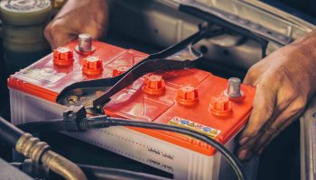

نکاتی در رابطه با باتری خودرو
باتری خودرو یکی از منابع تامین انرژی خودرو میباشد که در دسته مهم ترین آن ها قرار میگیرد. شاید برای شما نیز این سوال پیش بیاید که آیا خودرو با انرژی برق کار میکند؟ درست است که خودرو با انرژی سوخت بنزین کار میکند اما برق نیز تاثیر بسیار زیادی روی نحوه کارکرد خودرو دارد و میتواند انرژی مورد نیاز ماشین در بسیاری از موارد را تامین کند. توجه نمایید که باتری منبع اصلی برق در خودرو میباشد و در خودرو های امروزی برق از اهمیت بسیار زیادی برخوردار است. تمام آپشن های موجود در خودرو مانند ضبط خودرو، سانروف خودرو، چراغ ها، بوق، و حتی در برخی از موارد سیستم گرمایشی و سرمایشی خودرو تماماً به باتری خودرو بستگی دارند و بدون وجود باتری تمامی این سیستم ها از کار خواهند. افتاد اما علاوه بر این موارد، باتری ماشین یک وظیفه بسیار مهم و حیاتی دارد که جزء پایه حرکت خودرو میباشد. بدون وجود باتری عملیات استارت به خوبی انجام نخواهد شد و باتری و ماشین روشن نمیشود. هنگامیکه ماشین در حال حرکت است، انرژی مورد نیاز ماشین از طریق بنزین تامین میشود اما هنگامیکه ماشین شما خاموش است برای استارت خودرو هیچ انرژی دیگری جز باتری خودرو وجود ندارد و این باتری است که برای شروع به کار خودرو انرژی مورد نیاز را تامین میکند.
وظیفه باتری خودرو چیست؟
پییشتر ما برای شما کمی در رابطه با وظایف کلی باتری خودرو صحبت کردیم و به شما گفتیم که به طور کلی بدون وجود باتری ماشین شما دچار چه مشکلاتی خواهد شد؛ اما حال ما میخواهیم به صورت جزئیتری وظایف باتری ماشین را برای شما نام ببریم تا بتوانیم به شما بگوییم که به طور کلی وظیفه باتری ماشین چیست و بدون وجود آن کدام بخش های ماشین دچار مشکل میشوند. هر چیزی که در ماشین شما کوچکترین ارتباطی با الکتریسیته و انرژی برق داشته باشد به صورت مستقیم با باتری در ارتباط است. پس بدون وجود باتری سیستم های بسیار زیادی در ماشین شما از بین خواهند رفت.
استارت خودرو
مورد اولی که در دسته بررسی وظایف باتری خودرو قرار میگیرد تامین انرژی لازم برای استارت ماشین میباشد. پیشتر به شما گفتیم که وقتی ماشین شما خاموش میباشد، هیچ انرژی ذخیرهسازی شدهای در موتور ماشین شما وجود ندارد و این انرژی باید از جای دیگری تامین شود. به همین دلیل برای شروع احتراق بنزین در شمع ها و سیلندر های ماشین، شما به یک انرژی دیگری نیاز دارید که این انرژی از طریق باتری ماشین تامین میشود. این وظیفه به عنوان یکی از وظایف بسیار مهم و حیاتی ماشین تلقی میشود. توجه نمایید که سیستم برق ماشین انرژی را به سیستم احتراق انتقال میکنند میدهد. در مرحله اول برای استارت ماشین شما با انرژی برق شروع به کار میکند و بعد از اینکه ماشین به طور کامل روشن شد انرژی مصرفی روی بنزین تغییر میکند.
چراغ های خودرو
توجه نمایید که علاوه بر استارت ماشین، وظیفه روشن نگهداشتن چراغ های جلوی ماشین و هر چراغ دیگری که در ماشین شما قرار دارد برعهدهی باتری خودرو میباشد. چراغ های ماشین شامل چراغ های جلو و چراغ های عقب، راهنما، چراغ های صفحه سرعت ماشین، چراغ سقف، چراغ صندوق، و چراغ های دیگری در ماشین میشود. پس وظیفه تامین نور ماشین را نیز باتری برعهده دارد.
سیستم صوتی ماشین
یکی دیگر از سیستم های بسیار پرطرفداری که با باتری ماشین کار میکند سیستم ضبط ماشین است. امروزه انواع بسیار مختلف و متفاوتی از ضبط ها و پخشکننده های صدا روی ماشین ها نصب میشوند که هر کدام از آن ها برای کارکردن به انرژی برق نیاز دارند. پس باتری خودرو وظیفه سرگرمی شما در ماشین و همچنین پخش کردن آهنگ ها را نیز برعهده دارد.
سرمایش و گرمایش
سرمایش و گرمایش ماشین نیز یکی دیگر از وظایف باتری خودرو میباشد و بدون وجود باتری استفاده از کولر و بخاری به یک عمل غیر ممکن تبدیل خواهد شد. پس به طور کلی باتری ماشین یک قطعه بسیار مهم از ماشین میباشد و بدون وجود آن ماشین شما در واقع بی مصرف خواهد شد.
برای بالا بردن عمر باتری چه اقداماتی انجام دهیم؟
توجه نمایید که اگر شما میخواهید عمر باتری در حال استفاده خود را بالاتر ببرید و برای مدت زمان بیشتری از باتری خودرو استفاده کنید باید با روش نگهداری آن آشنا شوید. به طور کلی شما میتوانید با بررسی سطح الکترولیت موجود در باتری، محکم بودن صفحه های باتری، همچنین تمیز کردن سطوح خورده شده و از بین رفتن قطب باتری به سلامت باتری خود کمک کنید و برای مدت زمان بیشتری از آن استفاده کنید. توجه نمایید که کم بودن سطح الکترولیت یک عامل بسیار مهم و تاثیرگذار در خرابی و از بین رفتن باتری میباشد و شما میتوانید با بررسی سطح الکترولیت و اضافه کردن آن به باتری به راحتی و بدون هیچ گونه مشکلی برای سال های زیادی از باتری خودتان استفاده نمایید. به طور کلی تمیز بودن باتری نیز تاثیر بسیار زیادی در عمر آن دارد. پس از استفاده، ممکن است که دینام و تسمه و قطب های باتری دچار خوردگی و آلودگی های گوناگونی شوند. اگر شما نسبت به تمیز کردن این آلودگی ها مبادرت بورزید، میتوانید مطمئن باشید که عمر باتری شما تا حد بسیار زیادی بیشتر خواهد شد و شما میتوانید برای مدت بیشتری از باتری خودتان استفاده کنید. اگر شما حدوداً ماهی یک بار این اقدامات را انجام دهید و نسبتبه سلامت باتری خودتان اهمیت قائل شوید میتوانید مطمئن باشید که برای سال طولانی و ادامهداری میتوانید از باتری خودرو استفاده کنید.
جمع بندی
اگر کارکرد درست ماشین برای شما مهم میباشد شما باید نسبت به نگهداری مناسب از خودرو و باتری و همچنین تعویض به موقع آن دقت داشته باشید تا بتوانید در صورت نیاز و در صورت خرابی باتری را تعویض کنید و انرژی مورد نیاز ماشین خودتان را به خوبی تامین کنید. توجه نمایید که هنگام استفاده از باتری خودرو شما میتوانید با توجه به نکات ظریف و اطلاع از نحوه استفاده درست از باتری خودرو عمر باتری را افزایش دهید و برای مدتزمان بیشتری از باتری استفاده کنید. نگهداری مناسب از باتری میتواند هزینه شما برای خرید باتری جدید را تحت بسیار زیادی کم کند.